OVS 网络实验
用 Python 与 gRPC 探索网卡、虚拟交换机和资源管理接口。保留了 Open vSwitch 网桥操作、计算与存储协议等早期实验代码。

给网络操作一个接口
工程探索把网卡与 Open vSwitch 操作放到可调用的服务接口中，包含网卡配置、网桥信息读取和相关管理函数。
从单项脚本到服务协议
仓库整理了 Network、Compute 和 Storage 的协议定义与 Python 服务模块，尝试将网络、计算和存储相关操作组织在同一套调用结构下。
按原型保存
部分协议定义和实现仍不完整，这是一份早期技术实验记录。它保留了从单项网络脚本逐步走向服务接口的过程，而不是已经验收的生产运维系统。